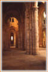

|
Le Pays d'Ouche
Retour |
Bernay :
|
|
|
Office de Tourisme : 29 Rue Thiers
BP 313 27303 Bernay
www.bernaytourisme.fr |
Marché :
mercredi et samedi
Musée des Beaux Arts, labellisé "Musée de
France" installé dans
l'ancien logis abbatial depuis 1991.
Tél 02.32.46.63.23 Fax 02.32.44.13.99
E-mail : musee@bernay27.fr
service.culturel@bernay27.fr
- www.ville-bernay27.fr
Ouvert du mardi au dimanche (fermé le lundi) : du 15/06 au 15/09 de 10h à 12h et
de 14h à 19h. Du 16/09 au 14/06, ouvert de 14h à 17h30. GRATUIT le 1er dimanche
du mois et tous les mercredis.
Maisons anciennes à pans de bois, Le
circuit " l'Eau, la Pierre, le Bois ".
Moulin du
Bas-Bouffey.
Actualités :
Voir en bas de page la sélection coups de cœur...
 |
Ancienne église abbatiale (photo) à l'origine de l'art
Roman en Normandie construite en tuf aux XIè-XIIè- siècles, rénovée au XVIIè s.
Etape de la route Historique des Abbayes. Bernay s'est développée autour de l'abbaye fondée en 1013 (1017-1026) par la duchesse Judith de Bretagne, femme de duc Richard II, Duc de Normandie. Visites organisées par l'OT |
 |
Histoire :
Entre 966 et 1008, le
duc de Normandie, Richard II, offre Bernay en dot à son épouse, Judith de
Bretagne, qui fonde aussitôt une abbaye bénédictine. Les moines construisent l'
abbatiale qui reste un joyau de l'architecture romane normande.
| 2007 : Le Maire de Bernay, Hervé Maurey, a annoncé lors de l'Assemblée générale des Amis de Bernay le 15 janvier 2005, la mise en place de groupes de travail pour organiser une commémoration pour le millénaire de la ville en 2007.(Eveil 26.01.2005) |
Bernay est placée sous la protection de Sainte Anne.
Au XIIè S, Alexandre de Bernay - né vers 1158 composa le Roman d'Alexandre en vers de douze syllabes appelés alexandrins.
Eglise Sainte Croix
Pendant longtemps les
habitants groupés autour de l'abbaye de Bernay ne possédaient pas d'église et
étaient admis dans une des chapelles de l'abbaye consacrée à saint Benoist. Les
religieux firent construire une église indépendante qui devint paroissiale en
1281. On fixe à 1357 la destruction de l'église primitive de Sainte-Croix. Elle
sera reconstruite grâce à la générosité de Bellot Taillefer qui déclara donner
en mai 1372, un manoir avec ses édifices près la ruelle Taillefer, entre le
Courant et le Chemin-du-Roi. La transaction est intervenue le 30 août 1372, et
la nouvelle église sera reconstruite sur l'emplacement désigné entre la rivière
du moulin à foulon et la ruelle Taillefer. Par un acte du 27 décembre 1379, les
religieux de Bernay permirent aux habitants de faire bâtir l'église
Sainte-Croix, qui fût elle même considérablement agrandie vers la fin du XVè S.
Elle sera élargie et une solide tour sera construite surmontée d'une flèche
recouverte de plomb, haute de 32 à 34 mètres. Cette flèche s'écroulera en 1687
entraînant dans sa chute une partie de la nef.
L'église, dans son état actuel n'a été achevée qu'à la fin du XIXè siècle.
Une grande
partie du mobilier provient de l'ancienne église abbatiale du Bec-Hellouin pour
le sauver au moment de la révolution. Statuaire du XVè, vitraux de l'atelier
Duhamel Marette d'Evreux (XIXè).
Basilique N.D. de la Couture
Eglise du XVè S. Vitraux fin XVè et XVIè s.Construite à l'emplacement d'un lieu de culte très ancien où un
premier sanctuaire a été construit au début du XIè S. Elle fut rebâtie et
agrandie aux XIVè et XVIè S. pour accueillir les pèlerins.
Elle est érigée en Basilique en 1950. La Statue de N.D. de la Couture
(ancien nom de la culture ou des champs) - XVIè s.- fait l'objet d'un pèlerinage chaque lundi de Pentecôte.
Au moyen-âge,
l'église N.D. de la Couture était tous les ans visitée par des pèlerins attirés
par un reliquaire renfermant des cheveux de la Sainte-Vierge, conservé dans
cette église en vertu d'une permission accordée en 1448 par Thomas Basin, évêque
de Lisieux.
Il est fait
mention en 1388 de l'hôpital Saint-Jean de Bernay.
Louis XIV
donne l'existence légale au nouvel hôpital de Bernay en mars 1697 grâce au
dévouement et à l'ardente charité de Madame de Ticheville, qui mourut le 2
décembre 1747 à l'âge de 86 ans.
Musée des Beaux Arts, labellisé "Musée de
France" installé dans
l'ancien logis abbatial depuis 1991.
Tél 02.32.46.63.23 Fax 02.32.44.13.99
E-mail : musee@bernay27.fr
service.culturel@bernay27.fr
- www.ville-bernay27.fr
Ouvert du mardi au dimanche (fermé le lundi) : du 15/06 au 15/09 de 10h à 12h et
de 14h à 19h. Du 16/09 au 14/06, ouvert de 14h à 17h30. GRATUIT le 1er dimanche
du mois et tous les mercredis. En 2007, le musée abrite plus de 10 000 pièces,
des peintures, des dessins , des céramiques et du mobilier. Ce fonds va bientôt
se trouver agrandi du
don de la famille
de Maistre : plus de 1050 nouvelles pièces, de la fresque gigantesque au
dessin d'essai. Mais les réserves du musée ne sont pas extensibles à l'infini un
bilan de l'état de conservation des œuvres a été dressé pour déterminer la
superficie nécessaire pour les abriter dans de bonnes conditions, soit 800 m²
d'espaces de réserves. (Extrait de l'éveil Normand du 4 juillet 2007)